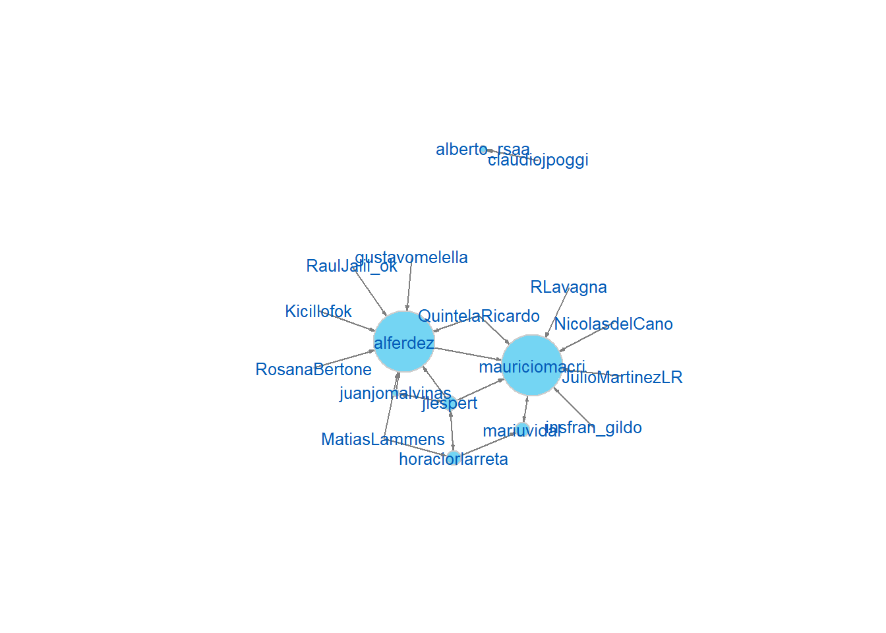

En el análisis anterior dejamos a nuestro lector con una incógnita: ¿qué tanto se “arroban”, es decir, mencionan, nuestros candidatos entre sí? :speech_balloon: Con base en esta suerte de “citas”, este breve post está destinado a explorar las comunidades que forma nuestra muestra de twitteros.
Ya estará acostumbrado usted, lector, a estos pasos preparatorios: la activación de nuestras “herramientas” y la llamada a nuestros datos.
Nuevamente, trabajamos con fuentes propias y oficiales. Particularmente útil nos será, en esta ocasión, el paquete igraph, para el cálculo y modelado de grafos.1
#paquetes
library(tidyverse)
library(tm) # para DocumentTermMatrixs
library(igraph) # para grafos
#propias
source("https://raw.githubusercontent.com/CVFH/Tuits_arg_2019/master/Modules/tuitsCandidatos.R", encoding = "UTF-8") # para trabajar con bases de tuitsEn esta ocasión, partiremos simplemente de la base de con los tuits emitidos por todos los candidatos.
# invocamos al script con las funciones correspondientes
source("https://raw.githubusercontent.com/CVFH/Tuits_arg_2019/master/preparacion_datos_tuits.R", encoding = "UTF-8")
# traemos datos
datos_base <- traerDatosTuits("base")
joined_candidatos <- traerDatosTuits("tot")Procederemos, primero, a oficiar algunas transformaciones en nuestros datos, a los fines de detectar y ordenar la clave de nuestro interés: las menciones. Luego, calcuaremos y mostraremos dos grafos de comunidades de twitteros.
Hacemos algunas transformaciones de los datos para obtener nuestros data frames de menciones. Sacamos provecho a la variable mention_screen_names, que lista los “@” incorporados en el texto. Tokenizando esta columna, obtenemos un vector con una única “cuenta mencionada” por fila.
Nos interesa contabilizar dos tipos de menciones: cualquier cita o referencia que nuestros candidatos hayan hecho, y las menciones mutuas: las veces que se interpelaron entre sí.
# PREPARACION DE DATOS. #####
# TODAS LAS MENCIONES
# extraemos las cuentas mencionadas. cada una constituye una fila
candidatos_menciones <- joined_candidatos %>%
subset(Campaña==1) %>%
mutate(mention_screen_names = as.character(mention_screen_names)) %>%
unnest_tokens(tokens, mention_screen_names) %>%
subset(!is.na(tokens))
# contamos cuántas veces mencionó a cada cuenta (a cada tercero)
# cada uno de nuestros candidatos
cuenta_menciones <- candidatos_menciones %>%
dplyr::count(screen_name, tokens)
# contamos las veces totales que fue mencionado cada tercero
# esto lo hacemos para filtrar cuentas irrelevantes,
# a los fines de mejorar la visualización más tarde
cuenta_mencionados <- cuenta_menciones %>%
dplyr::group_by(tokens) %>%
dplyr::summarise(veces_totales_mencionado= sum(n))
cuenta_menciones <- cuenta_menciones %>%
left_join(cuenta_mencionados)
cuenta_menciones_filtrado <- cuenta_menciones %>%
filter(veces_totales_mencionado > 1)
# MENCIONES MUTUAS
# filtramos las menciones mutuas: los tokens (las cuentas mencionadas) que coincidan con los nombres de Twitter de los candidatos
# repetimos la cuenta que hicimos antes: cuántas veces menciono cada quién a cada quién
cuenta_menciones_mutuas <- candidatos_menciones %>%
subset(tokens %in% datos_base$screen_name) %>%
dplyr::count(screen_name, tokens)Ahora sí, exploremos las relaciones que emergen entre nuestros candidatos a partir de las mentions.
Para explorar esto visualmente nos valemos de la elaboración de un grafo. Este considera a cada nombre (a cada cuenta de Twitter) como un “nodo” o vértice en una red, y contabiliza las relaciones existentes entre ellos (o edges; aquí, las veces que estas fueron “arrobadas”). En nuestro caso, trabajamos con un grafo dirigido, es decir, que presume que las relaciones entre nodos no son simétricas, no son recíprocas: de que un candidato mencione a una cuenta no se sigue que esta cuenta haga lo mismo.
Veamos primero el grafo resultante de computar la totalidad de las menciones.
Como comentamos en el código arriba, tenga en cuenta el lector que filtramos las cuentas que fueron mencionadas una única vez, a los fines de hacer más “limpia” la presentación visual de los vínculos que nos interesan.
# GRAFOS
## cualquier mencion #####
grafo_menciones_dirigido_df <- graph.data.frame(d = cuenta_menciones_filtrado, directed = T)
V(grafo_menciones_dirigido_df)$candidato <- as.factor(ifelse(V(grafo_menciones_dirigido_df)$name %in% datos_base$screen_name, "candidato", "otrx"))
# para colorear de manera diferente a los candidatos y a las cuentas de terceros
colrs <- c("cornflowerblue", "darkgray" )
V(grafo_menciones_dirigido_df)$color <- colrs[V(grafo_menciones_dirigido_df)$candidato]
coords <- layout_in_circle(grafo_menciones_dirigido_df, order =
order(V(grafo_menciones_dirigido_df)))
plot.igraph(grafo_menciones_dirigido_df,
edge.arrow.size=0.2, # tamaño de flecha de la arista
edge.arrow.width=0.8, # ancho de flecha de la arista
edge.color= "azure1" ,# color de arista
# edge.curved = T, # arista curva,
vertex.label.dist=2,
vertex.label.cex=degree(grafo_menciones_dirigido_df,mode = "in")*0.3, # tamaño de las etiquetas de los nodos
vertex.label.color = V(grafo_menciones_dirigido_df)$color , # color de etiquetas de nodos
#vertex.label.family="arial",
vertex.shape="none",
vertex.label=V(grafo_menciones_dirigido_df)$name,
#layout = coords
rescale = FALSE, ylim=c(-5,12),xlim=c(-5,11)#, asp = 0
)Hay muchos nombres y la visualización no es del todo clara; con todo, podemos extraer algunas observaciones interesantes. Lo más destacado es el relativo aislamiento de A. Rodríguez Saá y C. Poggi, los dos candidatos de San Luis, respecto del resto de la red. Los puntanos se “cortan solos”. Algo similar ocurre con los contendientes santafesinos, A. Bonfatti y O. Perotti.
Otro punto destacado es la aparición de ciertos personajes. El tamaño de la etiqueta @CFKArgentina, que pertenece a la actual vicepresidenta C. Fernández de Kirchner, es señal de que fue muy mencionada. También, es notoria la presencia de medios de comunicación, como La Nación y Ámbito Financiero.
La presencia destacada de los nombres de los candidatos, que hemos coloreado en azul, desde ya, no sorprende. Por el carácter sesgado de nuestra muestra, estas cuentas son obviamente nodos dominantes.
Veamos ahora las relaciones que entablaron nuestros candidatos entre sí, a partir de las menciones mutuas.
## menciones mutuas ######
# grafo dirigido
grafo_mutuas_dirigido_df <- graph.data.frame(d = cuenta_menciones_mutuas,directed = T)
plot.igraph(grafo_mutuas_dirigido_df,
edge.arrow.size=0.2, # tamaño de flecha de la arista
edge.arrow.width=0.8, # ancho de flecha de la arista
edge.color="grey50", # color de arista
#edge.curved = T, # arista curva
vertex.label.cex=0.8, # tamaño de las etiquetas de los nodos
vertex.label.color="#025CB8", # color de las etiquetas de los nodos
vertex.size=degree(grafo_mutuas_dirigido_df,mode = "in")*5, # Tamaño de nodo
vertex.color="#74D5F3", # color de nodos
vertex.label.family="arial",
vertex.frame.color= "grey80"
)
Aquí hemos cambiado nuestra estrategia de visuaización. Seleccionamos un valor fijo para los nombres y ajustamos el tamaño del nodo (del círculo detrás :large_blue_circle:) conforme a su importancia relativa.
Parece que los favoritos en la carrera electoral, A. Fernández y M. Macri, fueron las cuentas más citadas por los contendientes. Les siguen dos referentes de Cambiemos en ejercicio en los dos distritos más grandes del país: H. Larreta y M. E. Vidal. Por último, destaca nuevamente el aislamiento de los candidatos puntanos.
Cabe aquí un último alto aclaratorio: las menciones, es decir, el uso de “@” para referir a una cuenta, no son la única, y probablemente tampoco la más importante, forma de relacionarse que caracteriza a la red social Twitter. Dejamos para el futuro explorar, por ejemplo, los retweets o los favs.
En este post nos hemos trabajado con apenas una palabra, pero de gran valor: las menciones :speech_balloon:. Con ellas, hemos explorado visualmente las relaciones que nuestros candidatos entablaron en Twitter durante la campaña de 2019.
Pero todavía hay más para exprimir de la enorme cantidad de términos que circulan en la red. En el próximo post intentaremos profundizar un poquito en los temas que prefirieron nuestros candidatos.
Volver al inicio :house:
Este artículo fue una excelente guía para el armado del presente post.↩